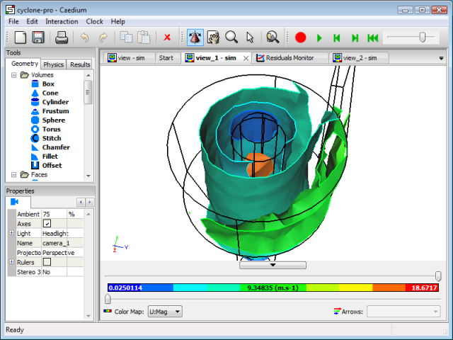

Product Design and Computer-Aided Engineering Analysis Tools
Computer-Aided Engineering (CAE) analysis tools, such as Computational Fluid Dynamics (CFD), have become an integral part of product design for many industries. The early adopters (and initial developers) of such tools were the aerospace and automotive industries. These industries were quick to notice the promise of CAE analysis tools to reduce the need for expensive physical modeling and prototypes. And where the aerospace and automotive industries led, many others have followed.
 Vertical Axis Wind Turbine Air Flow Simulation
Vertical Axis Wind Turbine Air Flow Simulation
Typical CAE analysis tool benefits include:
- Higher quality and performance due to a deeper understanding of a product
- Time savings and lower costs due to reduced need for physical modeling and prototypes
Deeper Insights
While it's obvious that replacing a physical test or prototype with a virtual simulation is likely to save money and time, the reality of incorporating CAE analysis tools into design activities is more subtle than a zero-sum, one-for-one replacement. As an example many, aerospace companies and Formula 1 teams have adopted CFD and yet still perform extensive physical model testing in wind tunnels. In other words, rather than replace wind tunnel testing, CFD is used as a complimentary tool. This leads to the conclusion that CAE analysis tools have additional benefits beyond physical modeling and prototypes.
CAE analysis tools have the ability to provide a deep insight into the performance of a product, beyond that provided by physical modeling. In the case of CFD, flow visualization can be used to view the previously invisible flow field. For example, deep insights into the performance of fluid flow devices comes from the ability of CFD to display contours of pressure and velocity vectors throughout the flow field without affecting (corrupting) the flow field - nearly impossible to achieve using physical modeling.
Pressure Coefficient Contours
Validation
The latest CAE analysis tools are good but not infallible. An understanding of the underlying principles (assumptions) used in a CAE analysis tool is essential to ensure that it is capable of simulating a specific configuration. As with any modeling technique (physical or virtual) it is a good idea to validate it against a known test case similar to the one in question for full confidence in the results. If no such test case exists, then consider performing an alternative simulation (physical or virtual) for comparison, just to be sure.
CAE For All
At each stage within product design there is an appropriate level of modeling (physical or virtual) in terms of turnaround time and accuracy. For each stage there are specific CAE analysis tools; some focused on quick results at the expense of accuracy; others focused on accuracy at the expense of turnaround time. A full spectrum of analysis techniques within an easy to learn unified simulation environment is the ideal.
The latest affordable and easy-to-use CAE analysis tools fall within the scope of almost anyone - hobbyists included. Without access to expensive manufacturing facilities and testing equipment a hobbyist or small business can take a concept design to a near production-ready product using the latest CAE analysis tools on a cheap yet powerful PC. Imagination required - possibilities unlimited.
Feedback
Questions? Ideas? Problems?

Recent blog posts
- CFD Simulates Distant Past
- Background on the Caedium v6.0 Release
- Long-Necked Dinosaurs Succumb To CFD
- CFD Provides Insight Into Mystery Fossils
- Wind Turbine Design According to Insects
- Runners Discover Drafting
- Wind Tunnel and CFD Reveal Best Cycling Tuck
- Active Aerodynamics on the Lamborghini Huracán Performante
- Fluidic Logic
- Stonehenge Vortex Revealed as April Fools' Day Distortion Field
 Get our Blog feed
Get our Blog feed